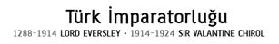

© DÜN BUGÜN YARIN YAYINLARI, 2013
DBY: 14
Araştırma-İnceleme: 4
Isbn: 978-605-4635-06-1
Sertifika No: 18188
Birinci Baskı:
İstanbul, Mart 2013
Çeviri:
Sedat Demir
Billur Manav Arslan
Editör:
Ersan Güngör
Yayın Yönetmeni:
İrfan Güngörür
Sayfa Düzeni:
DBY
Kapak Tasarımı:
Sercan Arslan
Baskı/Cilt:
Şenyıldız Matbaacılık Yay. Ltd. Şti.
Gümüşsuyu Cad. No:3/2 - Topkapı / İstanbul
Tel: 0212 483 47 91 (Sertifika No: 11964)
DÜN BUGÜN YARIN YAYINLARI
Ankara Caddesi, Ünal Han No: 21/4
Cağaloğlu, Eminönü - Fatih / İstanbul
Tel. - Faks: +90 212 526 98 06
www.dby.com.tr • dby@dby.com.tr